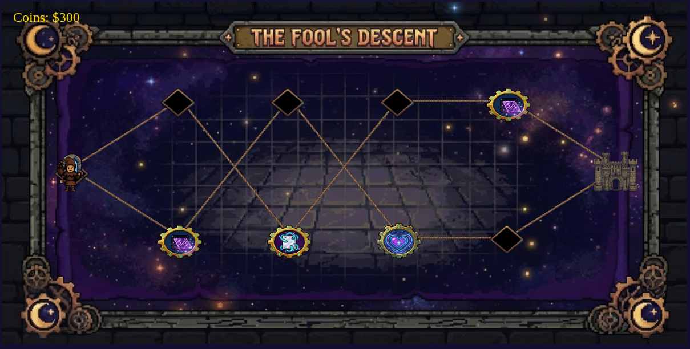
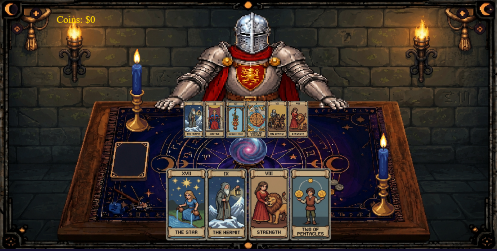

"You are The Fool. The only soul born without a fate. Now you must gamble the right to exist."
"Every journey into the unknown begins with a single step but ends with fate."
The Fool's Descent is a roguelike card game where you navigate a procedurally generated map and confront opponents at a tarot table. Your goal is simple: descend, survive, and ultimately face The Dealer himself, the architect of fate, before he reshuffles the world into oblivion.
You begin every run with nothing. No cards. No money. No destiny. Your first round in a duel is fought with an empty hand, pure chance, pure fate. You earn cards each time the Great Deck finishes during a duel, that becomes the foundation of your descent.
"The path is never the same twice. Neither is the fate that waits at the end."
When you Descent, a procedurally generated map unfolds before you, a web of nodes, each holding a different fate. You start on the far left and advance toward the right, choosing which path to walk.
Every map contains exactly 10 nodes: a starting portal, 4 enemy encounters, 4 upgrade sites, and The Dealer's castle at the end. No two descents are alike.
Your descent begins here. Step through the portal and choose your first path.
Face an opponent at the tarot table. Win to earn coins and new cards. Lose and you'll start over, keeping only half of your coins.
Spend your coins to strengthen your descent. Bind cards so they survive into the next duel, extend your maximum lives, or purchase a new card for your arsenal.
The architect of fate waits at the end of every descent. Reach him or be consumed trying.

☽ The path ahead is never the same twice ☽
"This is not a game. This is a negotiation with the end."
Every encounter takes place at the tarot table. Two forces face each other, you and your opponent, each with lives on the line and cards in hand. At the center lies the Great Deck: a shuffled pile of Sun and Moon cards that will determine who lives and who falls.
Before the duel begins, the Sun and Moon cards that compose the Great Deck are briefly shown to both players, then shuffled and placed face-down at the center of the table. Memorize what you saw.
Before fate speaks, you may play one card from your Character Deck to intervene. Discard it from your hand after use, your options narrow with every decision.
You must direct the top card of the Great Deck toward either yourself or your enemy. This is the gamble. This is the game.
The card is flipped and its effect applied to whoever you chose.
Your opponent follows the same process. They will use their own Character Cards and choose a target. Stay alert, every enemy has different habits, different aggression, and different decks.
The cycle continues until one side runs out of lives. Win and claim your coins and new cards. Fall and lose everything you carried, except half of your coins and the wisdom of your failure.

☼ Every card you play is a wager against fate ☼
"Even ruin leaves something behind."
Win a duel and claim 100 coins. Spend them on the map at upgrade nodes to build your deck and extend your survival.
When you fall, your cards are lost. But fate is not entirely cruel, you keep half of your coins, enough to begin again with something but in the beginning of the map.
"The Great Deck always runs out. The question is whether you run out first."
"The Great Deck writes destiny. These Arcana allow you to rewrite it."
"Even the smallest fate can change the course of a life."
Repeats the effect of the last Character Card played during the duel.
"The arcana remembers."
Discards the top card of the Great Deck before it can affect anyone.
"What never arrives can never harm you."
Revives you with one life after reaching zero.
"Hope shines brightest in darkness."
Grants 50 bonus coins after victory.
"Fortune favors preparation."
You cannot die during the next round.
"The lion kneels before true courage."
Draw two cards and choose one for yourself.
"Balance reveals hidden paths."
"Knowledge of fate is often more dangerous than fate itself."
Reveal the next card waiting in the Great Deck.
"The future whispers before it strikes."
Skip your opponent's next turn.
"Silence can be louder than destiny."
If you lose a life next turn, your opponent loses one too.
"Every debt must be paid."
Shuffle the Great Deck.
"The wheel turns for all."
Double rewards on victory. Double losses on defeat.
"Greed bargains with fate."
"Some destinies are too powerful to remain unchanged."
Permanently remove one Moon card.
"Love defies even death."
Destroy half of the enemy Character Deck.
"Everything built can fall."
Gain two lives but add a Moon card.
"Every gift demands a price."
Blocks the other player from using their Character Deck during their next turn.
"Surrender is sometimes the only path forward."
The only soul born without an assigned fate.
Randomly invokes the power of any card in existence. No prophecy can predict what happens next.
"The card that even The Dealer fears."